Redesign batch 2 fourth pass
Drafts only. The Kimurodex still shows the old art. Approve, ask for changes, or keep the old one, then press Export my decisions and paste the text to Claude. (Hidden from search engines, but anyone with the address can open it.)
Geodite / Gedonyx / Gedomancer
השלב השני שומר על הזהוב


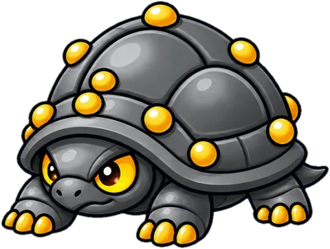
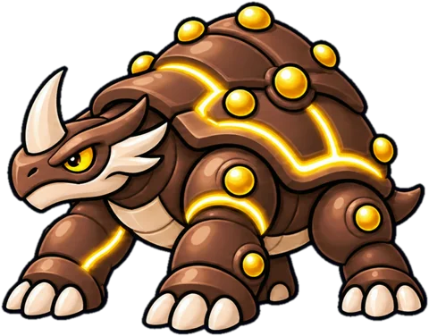
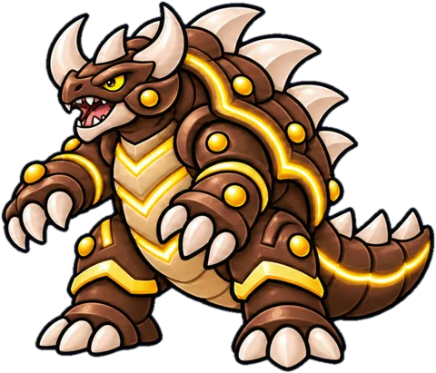
Quilkit / Quillyx / Ironquill
טפיר עשב ורעל (טייפ חדש)
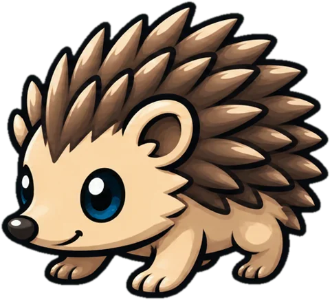
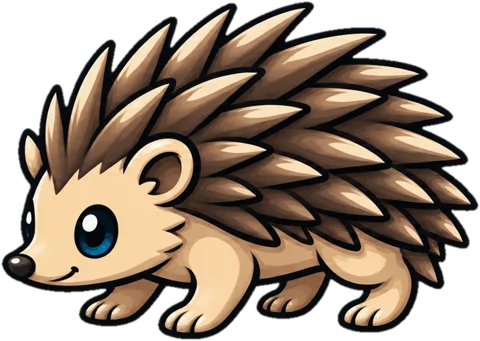

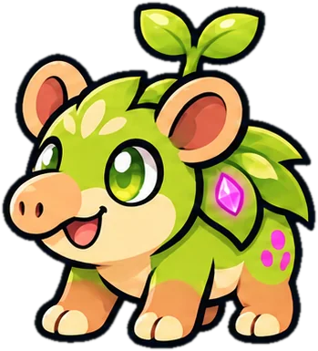
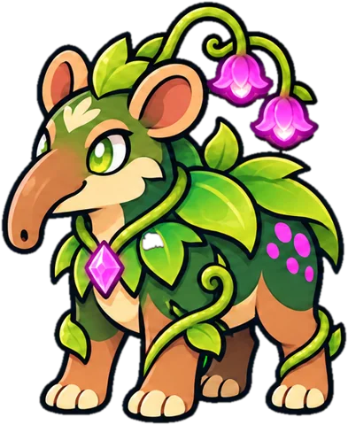
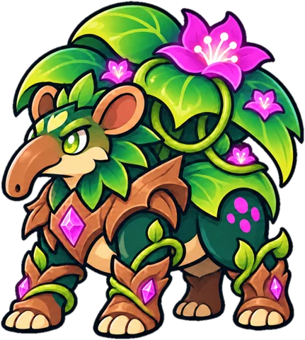
Hornkin / Taurite / Hornquake
גמל אדמה ואופל (טייפ חדש)


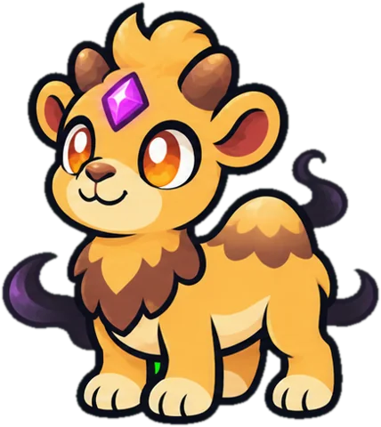
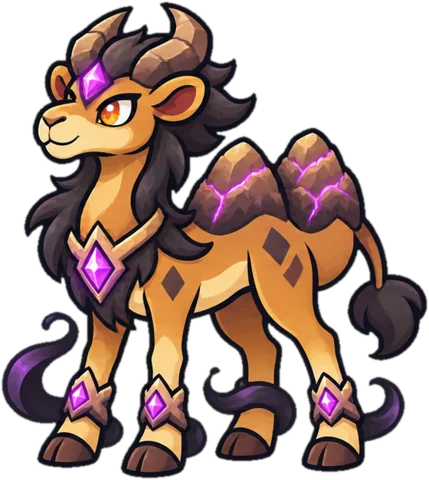
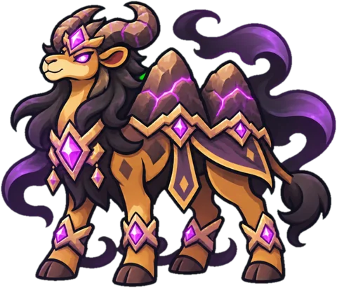
Sporkling / Mycodon / Sporgathor
בואש רעל ואופל (טייפ חדש)

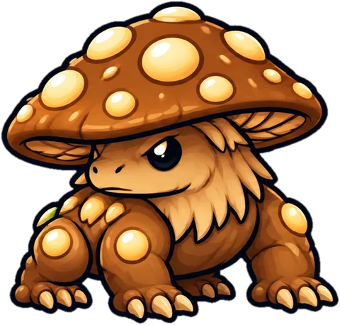

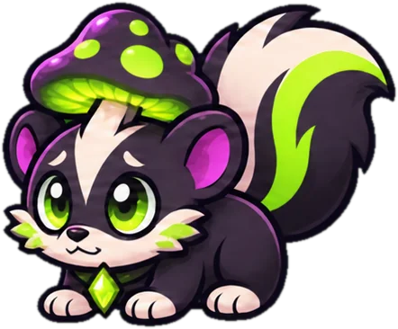
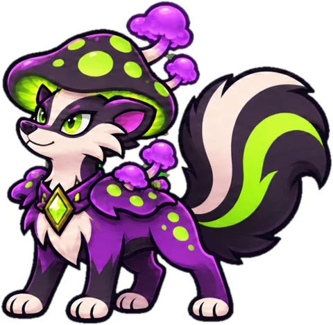
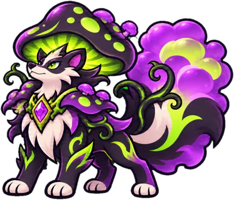
Frostusk / Mammox / Glacimoth
דוב נמלים אדמה ואש (טייפ חדש)


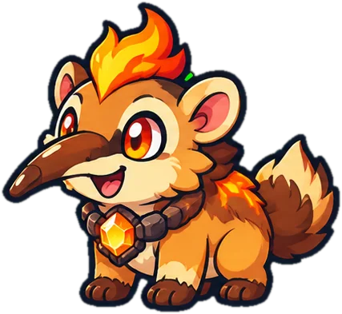
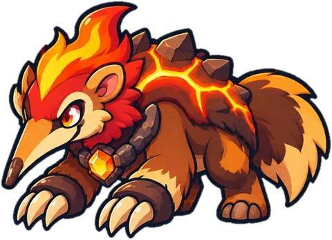
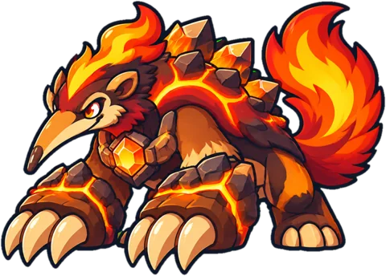
Spynlet / Spynose / Spynarch
פנים שונות בשלב 1

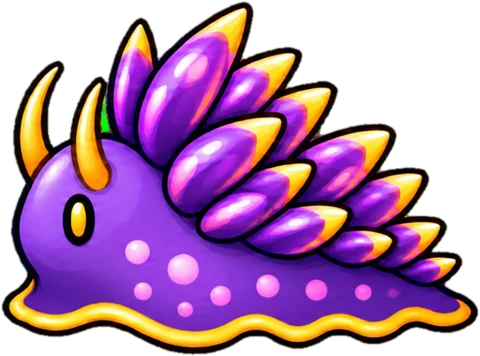

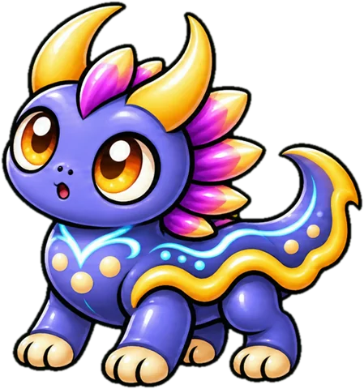
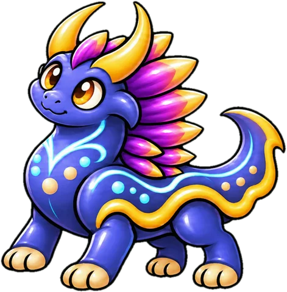

Stonini / Rhinameth / Geomortax
קואלה עשב ואופל (טייפ חדש)
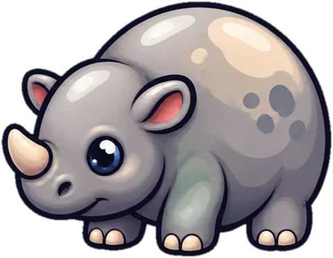


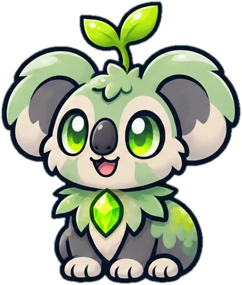
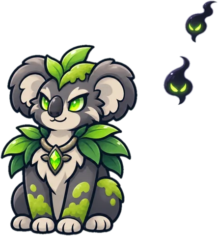
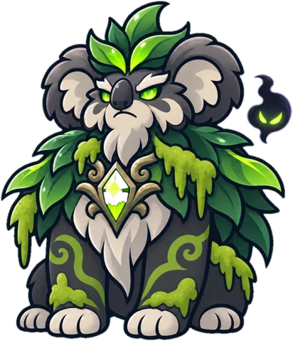
Shellail / Frostshell / Crystail
לובסטר לוחם ומים (טייפ חדש)


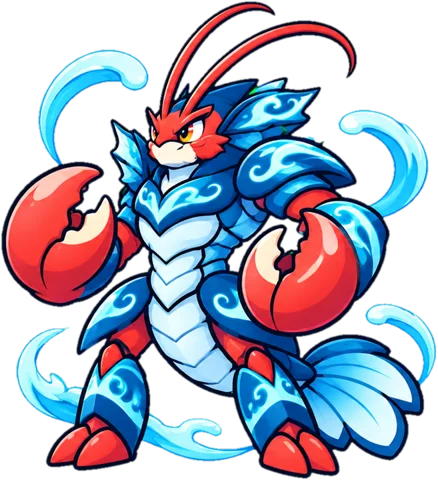
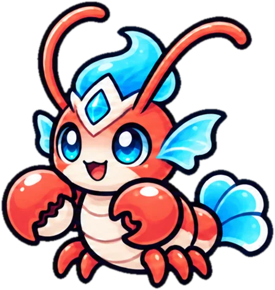
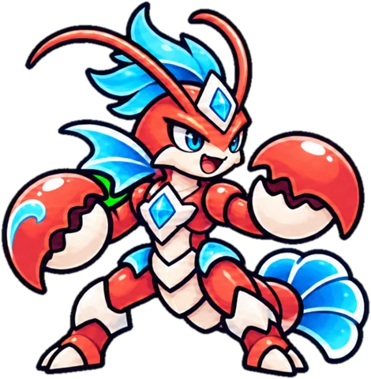
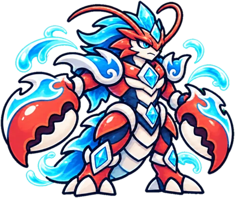
Amethoad / Gemsaur / Amethyrex
ברווזן מים ורעל (טייפ חדש)
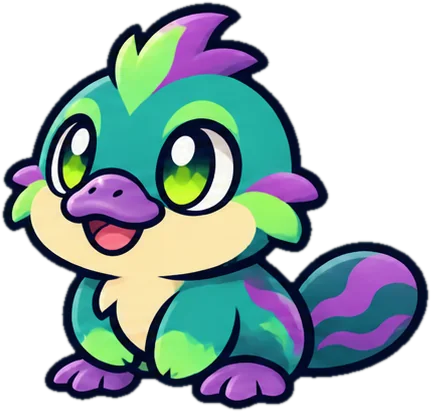
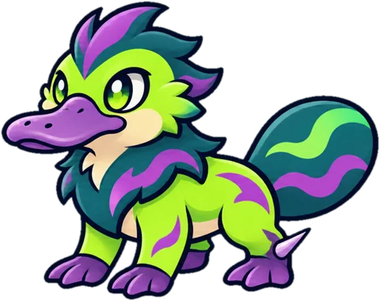

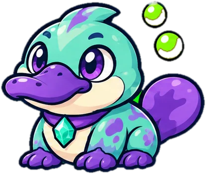
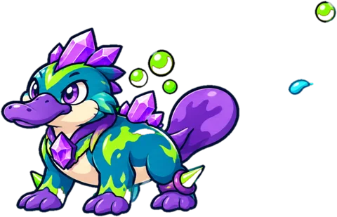
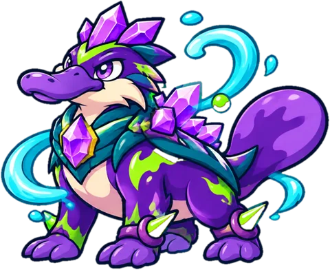
Warmolt / Magmaw / Pyrrhippo
קפיברה עשב ומים (טייפ חדש)


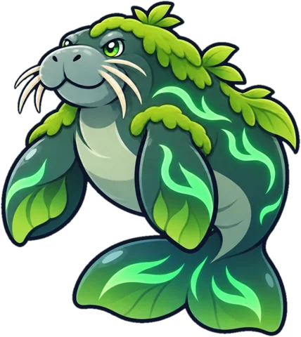
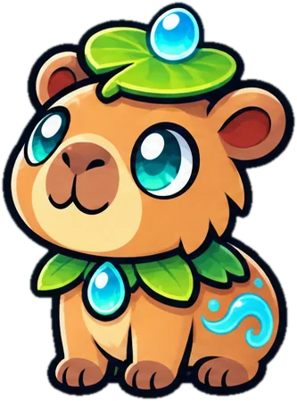
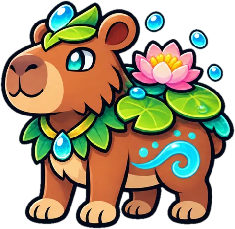
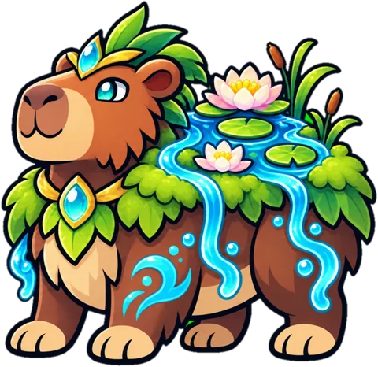